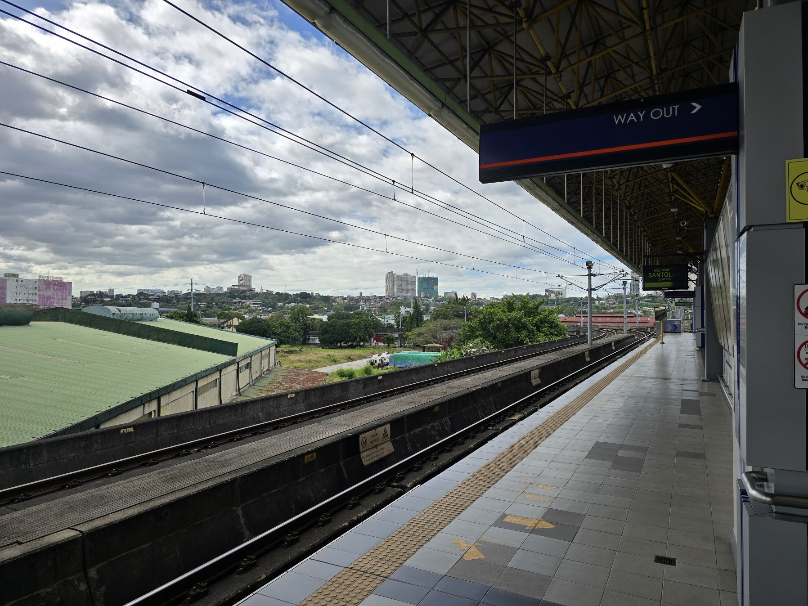
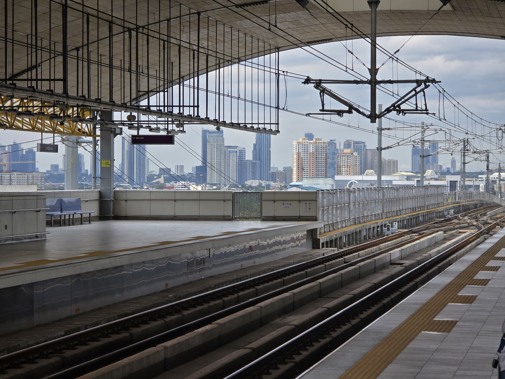
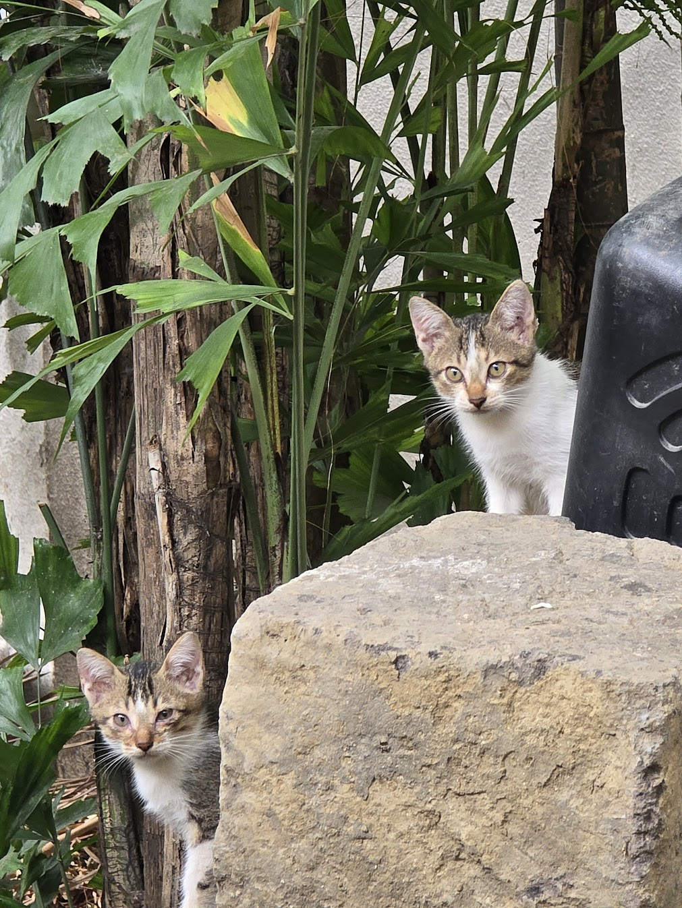
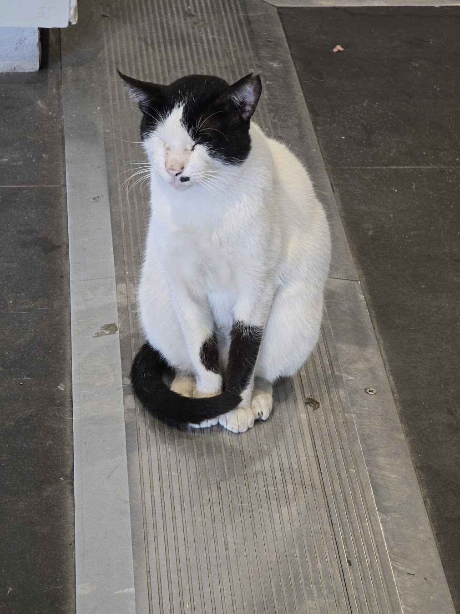
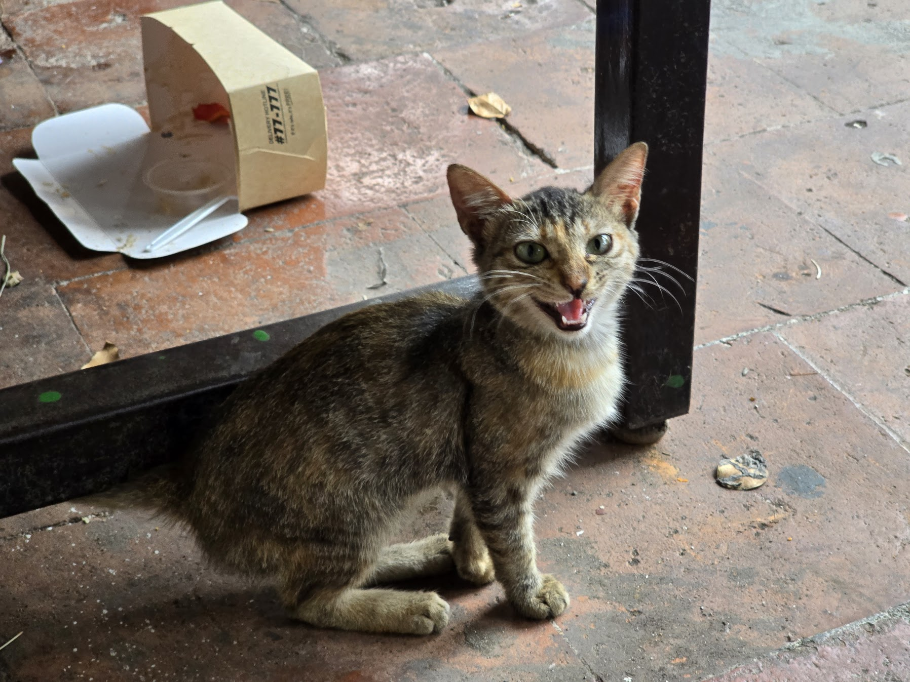
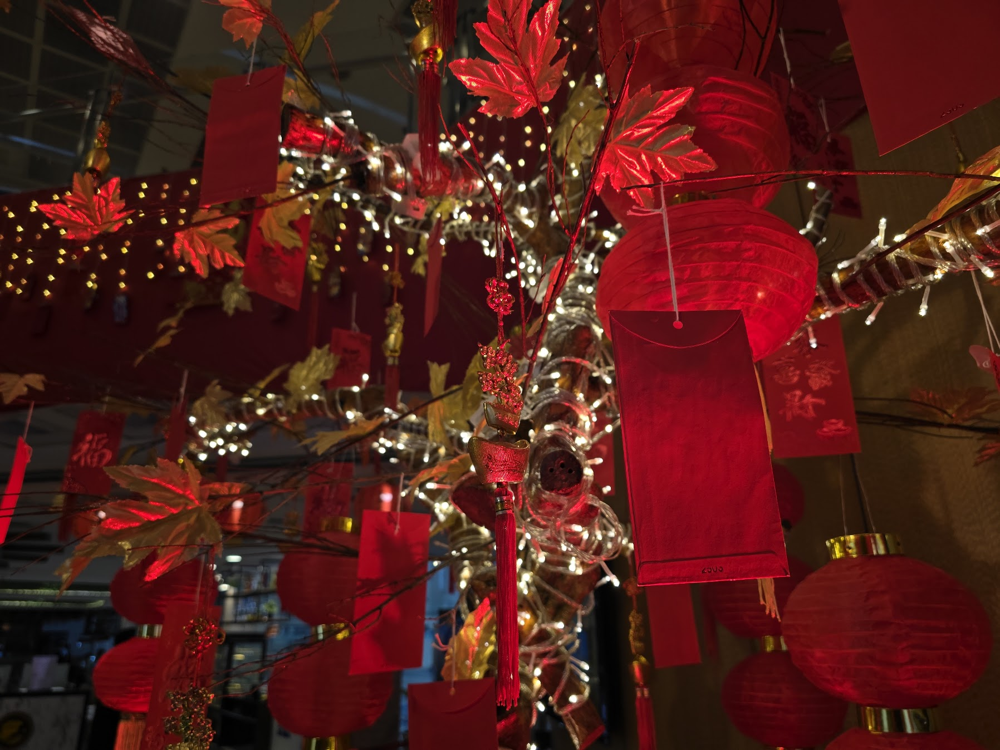
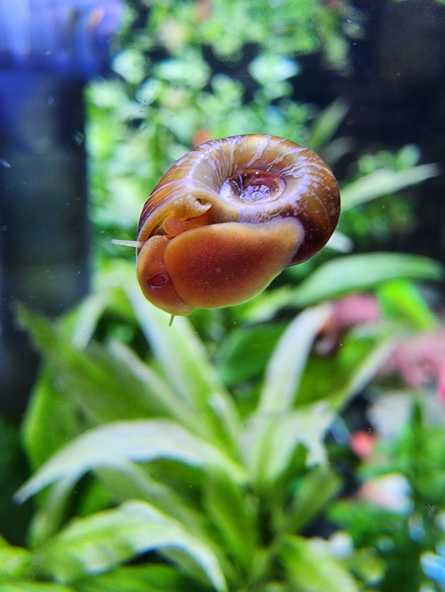
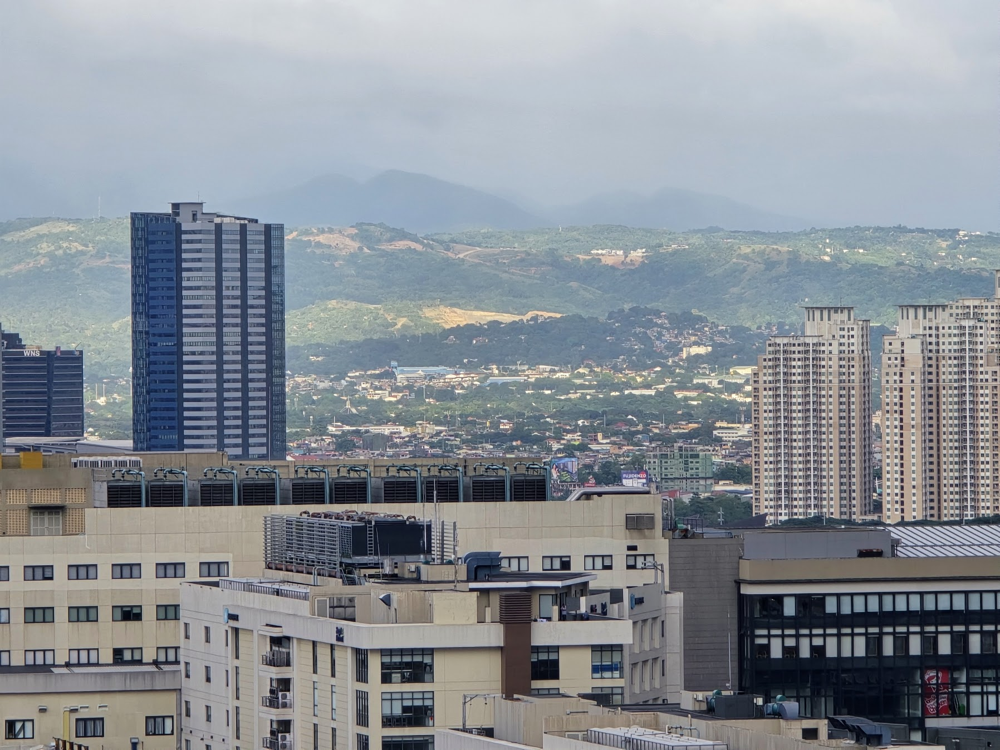
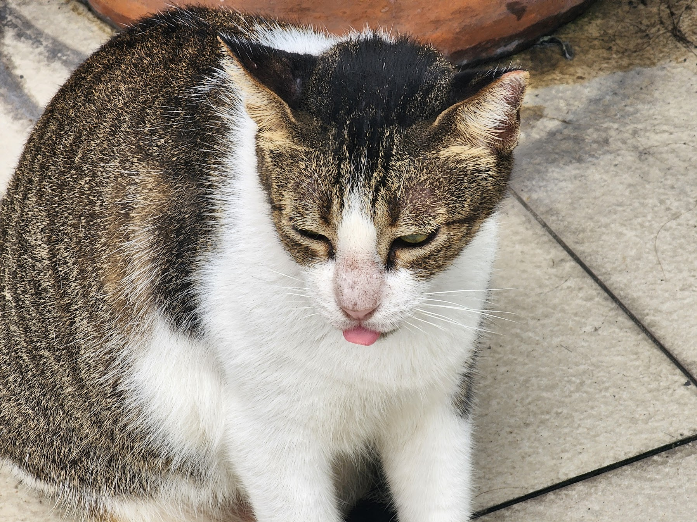

Shown here is a relatively simple final project made to adapt to different viewports alongside accessibility options.
Here is a fairly simple gallery of different photos I have taken throughout the year. Enjoy the different sights along with miscellaneous additions.

A station platform without a train

Terminus station with the cityscapes in the background

Two kittens curiously looking at the camera

Another cat sitting down, seemingly asleep

A stray cat seemingly happy to see the photographer

Chinese hongbaos/angpaos hanging from a tree just before CNY

One of the many small aquarium snails present in an quarium

Some buildings and the visible lush mountains in the foggy distance

Another picture of a cat, blepping